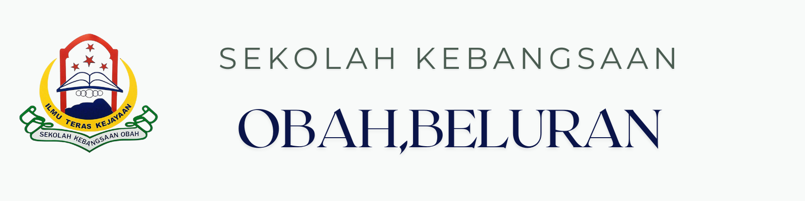
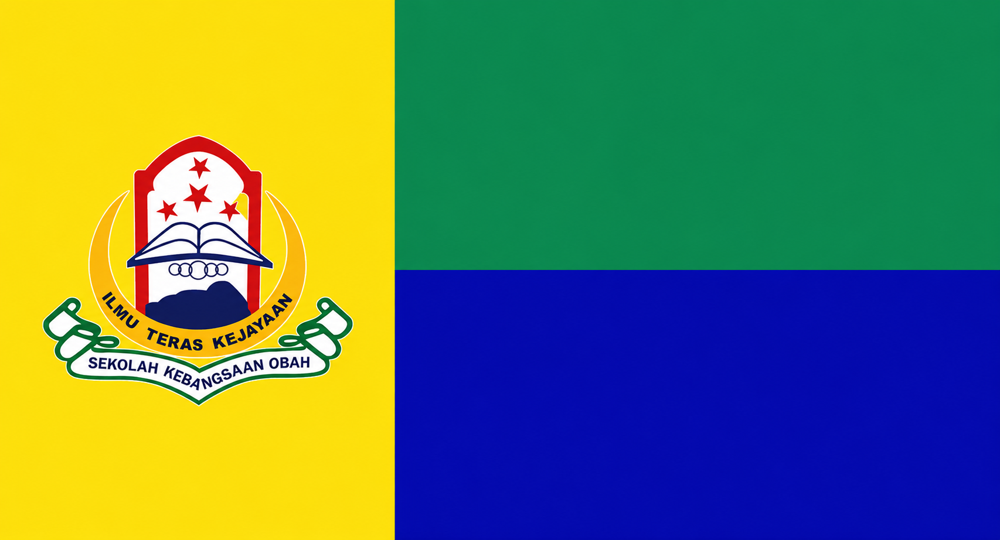

🛠 PORTAL DIGITAL SEKOLAH
SK OBAH
— Beluran, Sabah —
Pusat maklumat rasmi yang menghubungkan warga sekolah, ibu bapa dan komuniti.
▣Pendidikan Berkualiti
♟Insan Terdidik
✪Negara Sejahtera

Bersama Melakar Kecemerlangan

Persekitaran Pembelajaran Terancang

Ilmu, Disiplin dan Jati Diri
Kalendar Sekolah
Lihat KalendarAkses Pantas
Pencapaian SK Obah
Lihat Semua🏆
23Pencapaian & Anugerah
2024 – 2026
2024 – 2026
5Akademik
9Kokurikulum
9Sahsiah
JELAJAH PORTAL
Bahagian Utama Sekolah
Pilih bahagian untuk melihat program, dokumen dan maklumat terkini.
🏫01 · PENGURUSAN
Pentadbiran
Organisasi, takwim dan pekeliling.
Buka Dashboard →📚02 · AKADEMIKKurikulum
PBD, SEGAK, panitia dan PLC.
Buka Dashboard →🏃03 · BAKATKokurikulum
PAJSK, kelab, sukan dan unit beruniform.
Buka Dashboard →🎓04 · KESEJAHTERAANHal Ehwal Murid
Kebajikan, kesihatan, SPBT dan RMT.
Buka Dashboard →SOROTAN SEKOLAH
Berita Sekolah
LENSA SK OBAH
Galeri Aktiviti
❝ Pendidikan Berkualiti, Insan Terdidik, Negara Sejahtera.
Ilmu · Disiplin · Jati Diri · KomunitiSK Obah, Melangkah Ke Hadapan!